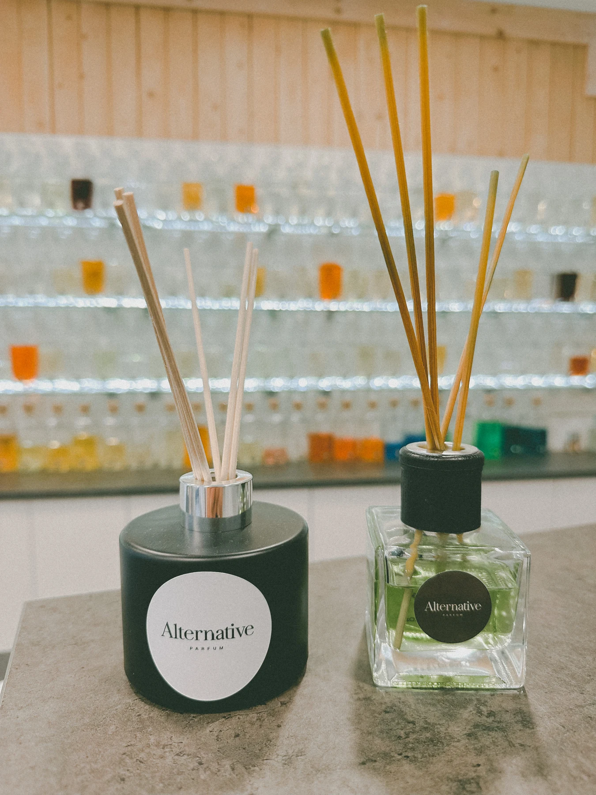
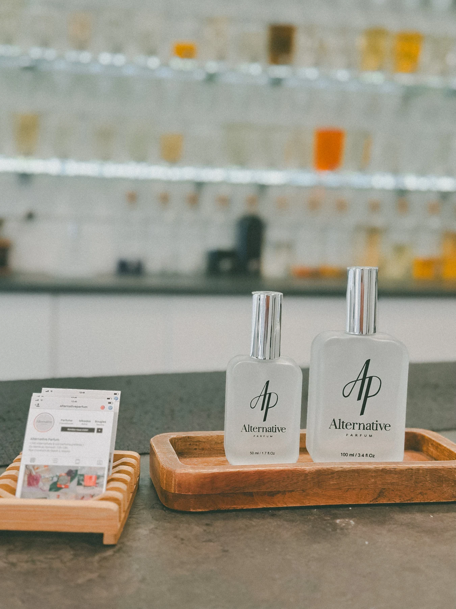
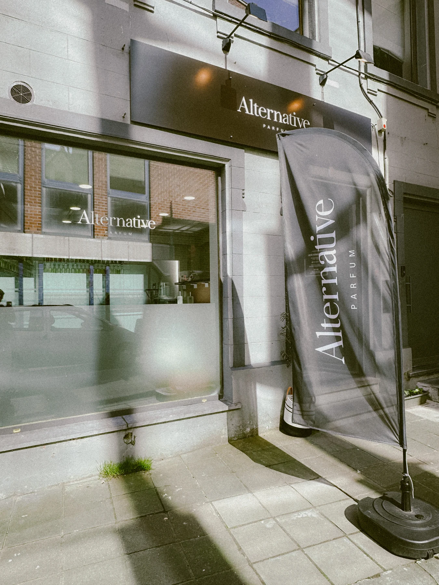

✳ ALTERNATIVE PARFUM · BELGIQUE
Un parfum.
Une émotion.
Votre alternative.
Une fragrance pour vous.
Une atmosphère pour chez vous.
Et le plaisir de trouver votre préféré.
Votre escale parfumée
à Wavre.

LES PETITS RITUELS FONT LES BEAUX JOURS.À fleur
de sens.L’UNIVERS
ALTERNATIVE
RENDEZ-VOUSWavreEN BOUTIQUE ↗de sens.L’UNIVERS
ALTERNATIVE
01 — DÉCOUVRIR02 — ÉCHANGER03 — SE RETROUVER
DEUX FAÇONS DE SE FAIRE PLAISIR
À chaque envie,
son univers.
Choisissez votre prochaine
parenthèse parfumée.

01 / PARFUMSLES PARFUMS
Votre parfum préféré,
une nouvelle rencontre.
Retrouvez l’univers de vos fragrances préférées et explorez les alternatives. Notre équipe est là pour vous accompagner dans votre choix.
Explorer les parfumsUn doute, une envie particulière ?
Parlons-en ensemble.

UN APERÇU DE NOTRE UNIVERS · PHOTO D’ARCHIVEON SE RETROUVE À WAVRE
Une porte ouverte
sur vos envies.
Rue du Pont du Christ 35
1300 Wavre, Belgique
1300 Wavre, Belgique
Du mardi au samedi · 12h – 18h
Préparer mon itinéraireUn passage prévu ? Appelez-nous pour confirmer les horaires du jour.
GARDONS LE CONTACT